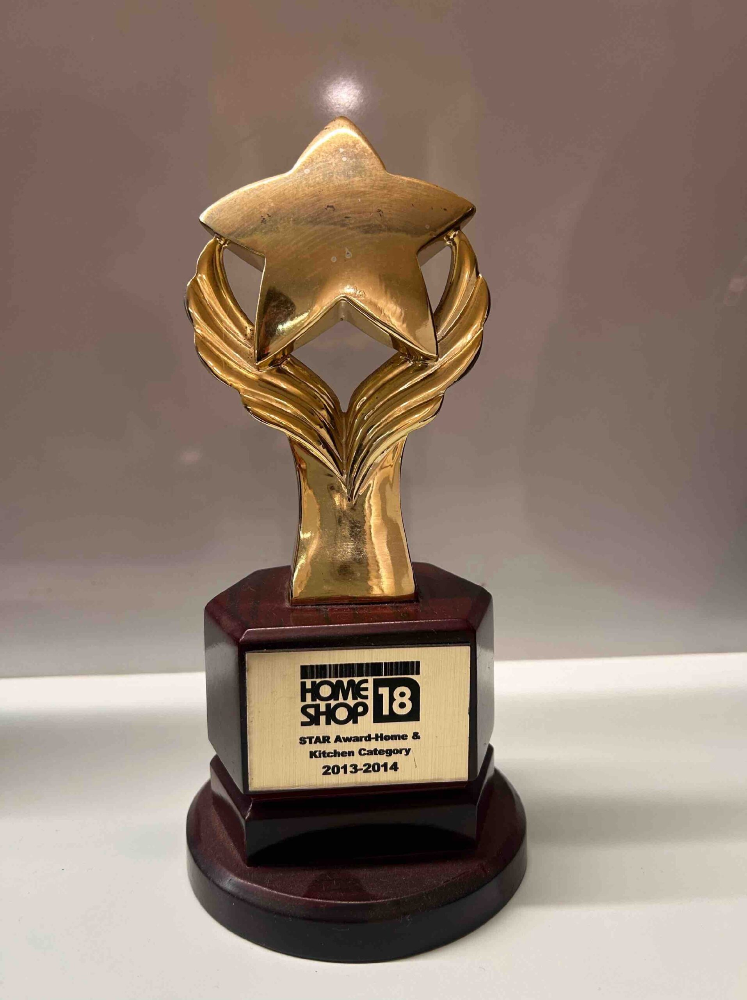
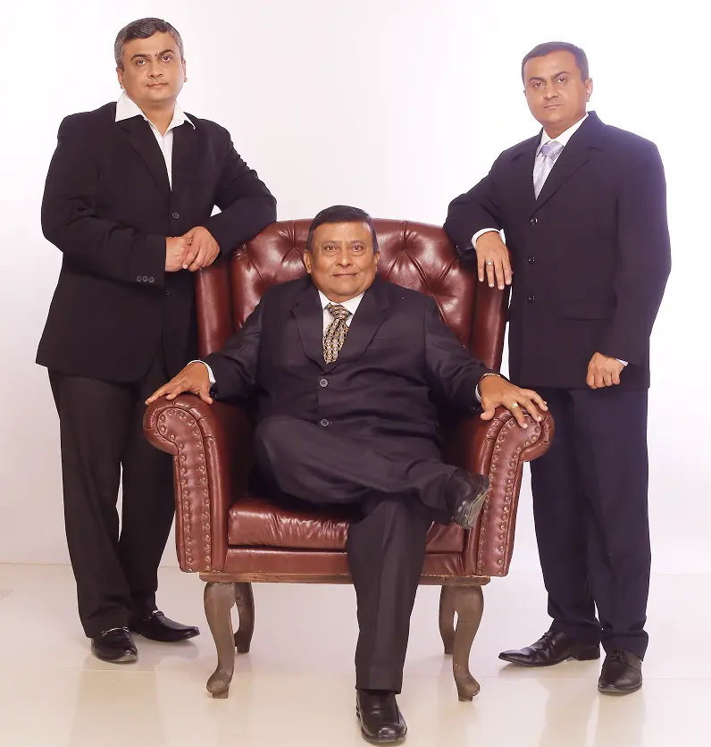
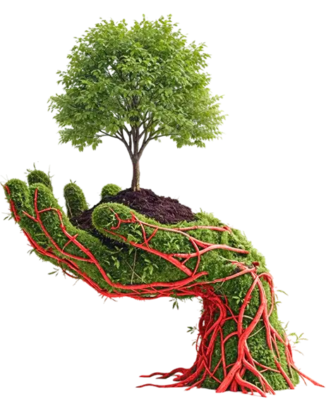
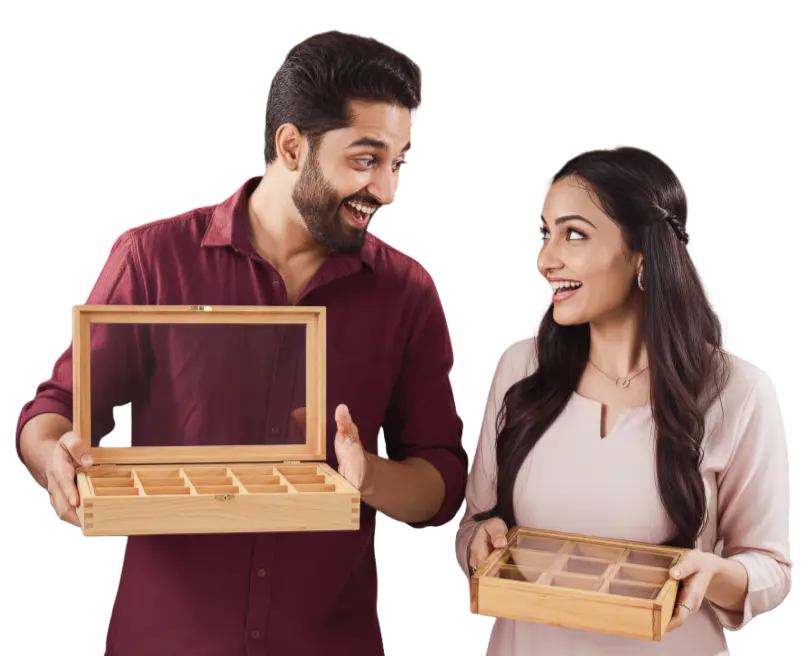

Crystal, synonymous with durability and innovation, is the first choice of quality-conscious consumers. The Crystal Group is a trusted manufacturer and marketer of kitchenware, cookware, serveware, storage solutions, and cleaning aids a complete home solutions provider.
Years of Experience
Employees
Products
Satisfied Customers


Instinctively trusted for thoughtfully designed, reliable solutions that elevate everyday cooking and cleaning in modern homes.
Simplifying daily life with precise, durable, and ethically crafted products that evolve with every Indian household.
Thoughtfully designed for modern homes, we deliver trusted, durable solutions for everyday cooking, serving, storing, and cleaning—powered by ethical, science-driven manufacturing that cares for the planet.
From a single gas lighter to a complete home ecosystem — five decades of made-in-India innovation, told in fifteen defining chapters.

Reliable, high-quality home solutions tailored for large-scale and institutional requirements.
Bringing trusted Indian craftsmanship to global markets with consistent quality and compliance.
Partner with us to expand Crystal’s presence across markets through a strong and reliable product network.
